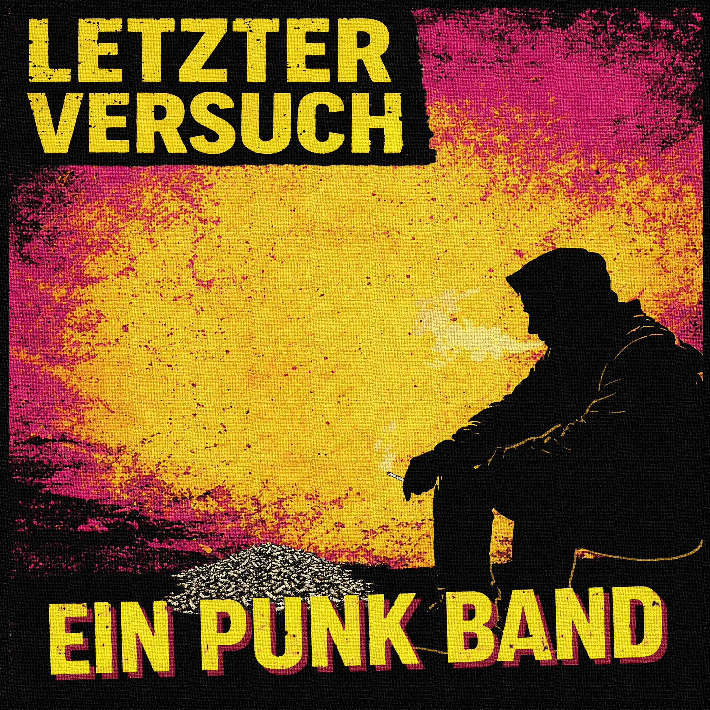

Review
EIN PUNK BAND - Letzter Versuch

Über Ein Punk Band findet man im Netz ungefähr so viel wie über den letzten sauberen Aschenbecher in einer Punker-WG.
Spotify.
Facebook.
Ein paar gelb-pinke Cover.
Fertig.
Also gut.
Dann muss der Song eben selbst erklären, warum er existiert.
Zum Song auf YouTube geht es hier entlang.
Und genau das macht "Letzter Versuch".
Verdammt.
Ein Liebeslied.
Findet man im Punk erstaunlich selten. Nach allem, was ich in den letzten Jahren so von Punkbands mitbekommen habe, tun sich viele damit ziemlich schwer. Niemand möchte kitschig klingen. Niemand möchte peinlich werden. Also singt man lieber über Politik, Bier oder brennende Mülltonnen.
Ich habe ehrlich gesagt die ganze Zeit darauf gewartet, dass der Song irgendwann ins Kitschige kippt.
Mit jeder Strophe dachte ich:
"Jetzt passiert's."
Passierte aber nicht.
Im Gegenteil.
Musikalisch hatte ich bei dem Bandnamen erst minimalistischen Punk erwartet. Vielleicht eine Akustikgitarre, eine Stimme und irgendwo fällt im Hintergrund ein Stuhl um.
Stattdessen klingt das erstaunlich rund. Fast wie eine komplette Band. Oder einer hat einfach alles selbst eingespielt. Seit FC Baum weiß ich jedenfalls, dass beides problemlos funktionieren kann.
Und dann ertappte ich mich noch bei einem Gedanken, den ich vorher garantiert nicht auf meinem Punk-Bingo-Zettel hatte:
Irgendwo zwischen den Gitarren und dieser angenehm angerauten Stimme musste ich plötzlich an Fury in the Slaughterhouse denken.
Nicht als Kopie.
Nicht als Vergleich.
Eher als Gefühl.
Fragt mich nicht warum.
War einfach so.
Textzeilen wie:
"Du für dich und ich für mich."
"Getrennt für immer, was zusammen gehört."
"Letzter Versuch, obwohl das wohl wieder nichts bringt."
sind gefährliches Gelände.
Da kann man ganz schnell in Richtung Kitsch, Gefühlskirmes und betretenes Weggucken abrutschen.
"Letzter Versuch" läuft genau an dieser Grenze entlang.
Und fällt trotzdem nicht herunter.
Die ruhige, leicht angeraute Stimme macht den Song beeindruckend zugänglich, ohne ihn weichzuspülen. Das wirkt nicht aufgesetzt. Das wirkt einfach ehrlich.
Ich hätte am Ende wirklich gerne irgendetwas Gemeines geschrieben.
Irgendwas mit peinlich.
Irgendwas mit Herzschmerz.
Irgendwas, worüber man sich als Punk eben so lustig macht.
Geht aber nicht.
Vielleicht ist genau das Punk.
Sich trauen, ein Liebeslied zu schreiben, ohne sich hinter Ironie, drei Gitarrenwänden oder einer Wagenladung Sarkasmus zu verstecken.
"Letzter Versuch" macht genau das.
Und zwar verdammt überzeugend.
Verdammte Banausen.
Jetzt bleibt mir wohl nichts anderes übrig, als mir die anderen Veröffentlichungen von Ein Punk Band ebenfalls anzuhören.